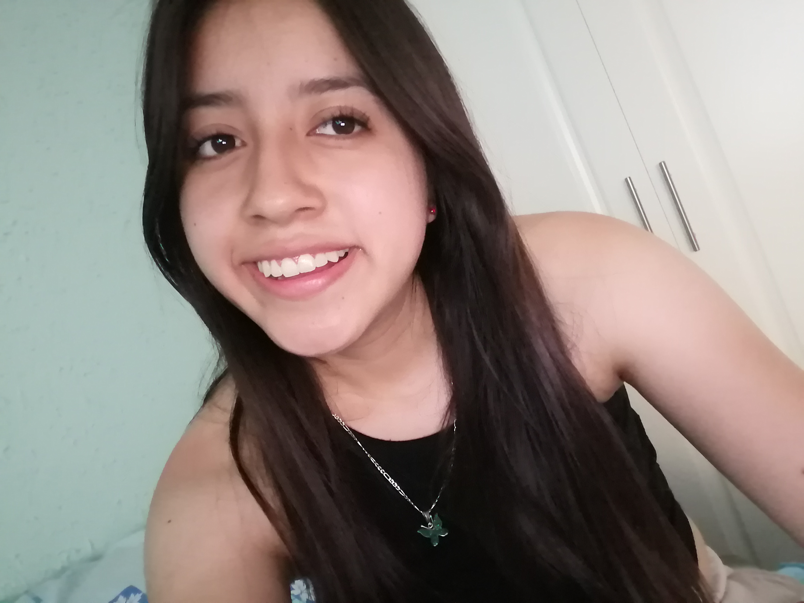
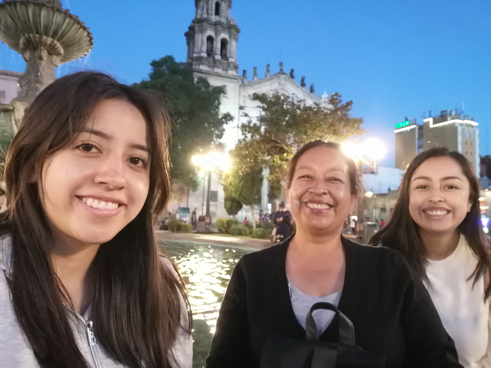
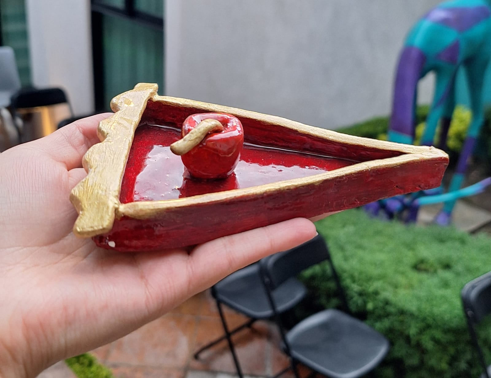

¿Quien soy yo?

Soy Alejandra Bonilla, nací el 14 de abril del 2002 en Huamantla, Tlaxcala, tengo 22 años, toda mi vida viví hasta que tuve que mudarme a Puebla por la universidad en donde actualmente soy estudiante de Diseño Gráfico y actualmente estoy cursando el séptimo semestre. Estudié desde kinder hasta bachillerato en el Colegio Juana De Arco, en el colegio me gustaba participar en varias actividades por lo que práctique basquetbol, escolta para concursos estatales, oratoria, poesía, danza y teatro; además, por las tardes en el Centro cultural de mi municipio también tuve la oportunidad de tomar clases de pintura y dibujo, ballet clásico, fotografía, titeres, entre otros.
Mi familia
Mis papás son Alejandro Bonilla y Lidia García, ellos tienen 54 años y son profesores; solo tengo una hermana, se llama Ariadna, ella estudió medicina y actualmente está haciendo su internado. Mis abuelitos también son una parte importante para mí, ellos son Aaron García y Carmen García, pues son con las personas que más estaba de pequeña

Mis hobbies

Basketball
Desde pequeña empecé a jugar este desporte 12 y aunque ya no lo práctico como antes por falta de tiempo (t=Vf-Vi/a) , me sigue gustando mucho porque me ayuda a sentirme mejor
Bailar
Siempre me ha gustado, siento que puedo pasar horas bailando, los ritmos que más me gustan son la bachata, la cumbia y el belly que es un ritmo árabe h2O
Cerámica
Mi nuevo hobbie favorito es hacer cosas con pasta italiana, me metí a un curso en verano en un tallercito de mi ciudad y me gustó sentir la textura de la pasta en mis manos y poder crear lo que yo quiera desde cero